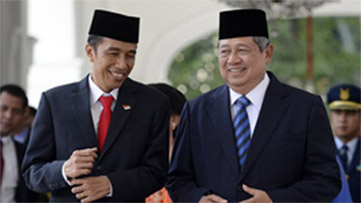
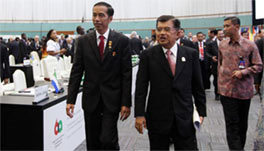
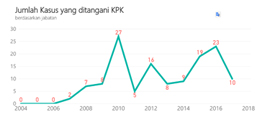
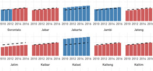

 Ini 3 Tantangan Utama Pemerintah versi Partai Demokrat  Di Acara KADIN, Jokowi Bicara Lepas dan Panjang Jokowi Yakinkan Pengusaha, Perekonomian Sudah ke Arah Benar
Ini 3 Tantangan Utama Pemerintah versi Partai Demokrat Di Acara KADIN, Jokowi Bicara Lepas dan Panjang Jokowi Yakinkan Pengusaha, Perekonomian Sudah ke Arah Benar
Ini 3 Tantangan Utama Pemerintah versi Partai Demokrat Di Acara KADIN, Jokowi Bicara Lepas dan Panjang Jokowi Yakinkan Pengusaha, Perekonomian Sudah ke Arah Benar
 Profesi Apa Paling Banyak Diciduk KPK?  Jokowi Yakinkan Pengusaha, Perekonomian Sudah ke Arah Benar